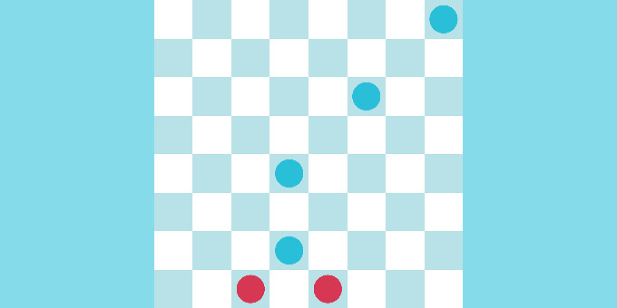
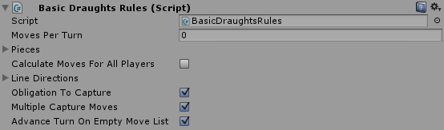
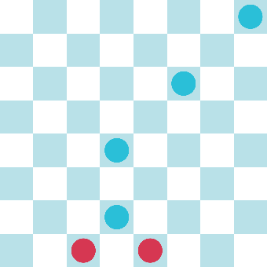
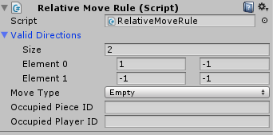
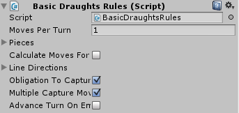

Creating Your Own Grid Game Rules

In this tutorial, we will focus on implementing Basic Draughts Rules.
In the example, you can see there are three checkboxes on the BasicDraughtsRules component that represent the draughts-specific rules discussed here.

We will use the following configuration to test the rules.

If you try the game with all checkboxes checked, you will play a game with the normal draughts rules. Red starts the game, so you are obligated to capture the closest blue piece. If you move the right piece, you can capture all the pieces all the way up.
All three checkboxes are selected in this example:
- Obligation To Capture: If any of your pieces can capture a piece, it must do that movement.
- Multiple Capture Moves: If after a capture, your piece can capture another one, it must do that movement.
- Advance Turn On Empty Move List: Your turn does not end unless you move a piece and that piece does not have any valid movement after its first move.
If you uncheck the Obligation To Capture checkbox, you will see that now you can move to any valid position even if your actual position allows a capture.
When this box is unchecked, the rule extension is deactivated so only the general piece rules (as configured on the piece) apply.

If you re-check the Obligation to Capture and now uncheck the Multiple Capture Moves, you will notice that you can only capture one piece and then your turn is over.

To switch off only the last rules, you need to set the Moves Per Turn field to 1. By unchecking this box, the custom turn advancement is deactivated, and the default is used. But the default rule requires a positive moves per turn.

If you play with this configuration, you will notice it works as if you do not have the Multiple Capture Moves checkbox checked. This is because the normal Grid Game Rule for ending the turn (with a value of 1 in Moves Per Turn) happens after a valid move is done, ignoring the Multiple Capture Moves behavior.
How does this work in the Script?
If you open and look at the script, you will notice that it extends from the GridGameRules. This class has the general rules for any rectangular grid game. There are a ton of methods that you can override, but you don’t need to implement them all – only the ones that apply to your game. In this case, we will override the following methods:
UpdateMovesForPlayerOnMoveEndOnAllMovesEnded
The three bool variables that control the rules are here only for the purpose of this tutorial. Usually, you just need to extend the methods without the need for a bool to control whether to apply the rule or not. (Although this idiom can be useful for prototyping different rules).
We recommend calling the base method of every overridden method so you actually expand the behavior already defined.
The UpdateMovesForPlayer uses the movesList parameter to check whether there is a CapturePieceMove, and if there is, it will remove all moves that are not capture moves from the moveList.
In OnMoveEnd, if the moveList is clear, a check is performed on the EndedMove (the move that would usually end the turn). If it was a CapturePieceMove, then it is necessary to check for new available capture moves and add them to the moveList.
For the OnAllMovesEnded, all that is needed is to check whether the moveList is empty or not to advance the turn if it is. (For this to work, the moves per turn must be set to 0 in the inspector).
You can tweak this example and add more rules, so you can test how it all works.